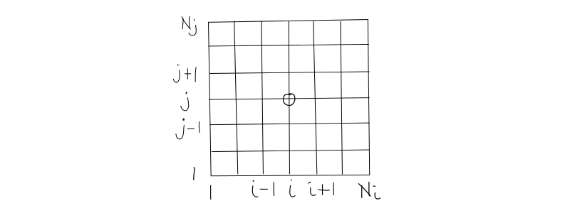

1.1.2.1. The Finite Difference Method¶
1.1.2.1.1. Origin and Concept¶
- Invented by Euler in 1768 for one dimension, extended by Runge in 1908 to two dimensions
- Concept is to approximate derivatives using Taylor Expansions
1.1.2.1.2. Define numerical grid¶
{kind=link}
- Two families of grid lines
- Grid lines of the same family do not intersect
- Grid lines of different families intersect only once
- Node (i,j) is in 2D - an unknown field variable which depends on neighbouring nodes providing one algebraic equation
1.1.2.1.3. Define Derivative¶
1.1.2.1.3.1. Mathematical Interpretation¶
\[\left . {\partial u \over \partial x} \right \vert_i = \lim_{\Delta x \rightarrow 0} {u(x_i + \Delta x) - u(x_i) \over \Delta x}\]
1.1.2.1.3.2. Geometric Interpretation¶
- Slope of the tangent to the curve with three approximation to the exact solution: Backward, Forward and Central Difference.
{kind=link}
- Backward difference
\[\left . {\partial u \over \partial x} \right \vert_i \approx {{u_i - u_{i-1}} \over \Delta x}\]
- Forward difference
\[\left . {\partial u \over \partial x} \right \vert_i \approx {{u_{i+1} - u_i} \over \Delta x}\]
- Central difference
\[\left . {\partial u \over \partial x} \right \vert_i \approx {{u_{i+1} - u_{i-1}} \over 2 \Delta x}\]
1.1.2.1.3.3. Error¶
- Some approximations are better than others
- Quality of approximation improves as \(\Delta x\) is made smaller
1.1.2.1.3.4. Taylor Series Expansion - Order of the approximations¶
\[u(x) = u(x_i)+(x-x_i) \left . {\partial u \over \partial x} \right \vert_i + {(x - x_i)^2 \over 2!} \left . {\partial^2 u \over \partial x^2} \right \vert_i + \cdots + {(x - x_i)^n \over n!} \left . {\partial^n u \over \partial x^n} \right \vert_i\]
- Forward differencing: \(x = x_{i+1}\)
- Backward differencing: \(x = x_{i-1}\)
Forward Differencing¶
- We need to obtain the derivative \(\left . {\partial u \over \partial x} \right \vert_i\)
\[\left . {\partial u \over \partial x} \right \vert_i = {(u_{i+1} - u_i) \over (x_{i+1} - x_i)} - {(x_{i+1} - x_i) \over 2!} \left . {\partial^2 u \over \partial x^2} \right \vert_i - \cdots - {(x_{i+1} - x_i)^{n-1} \over n!} \left . {\partial^n u \over \partial x^n} \right \vert_i\]
- If \(x_{i+1} - x_i\) is small, then:
\[\left . {\partial u \over \partial x} \right \vert_i = {(u_{i+1} - u_i) \over \Delta x} - O(\Delta x)\]
- There is a possibility that the derivative \(\left . {\partial^2 u \over \partial x^2} \right \vert_i\) is large, but we assume that the function is well-behaved.
- Forward differencing approximation neglected terms of \(O(\Delta x)\) \(\rightarrow\) TRUNCATION ERROR
- As \(\Delta x \rightarrow 0\) \(\Rightarrow\) FD converges!
Central Differencing¶
- For Central Differencing, the error is \(O(\Delta x^2)\)